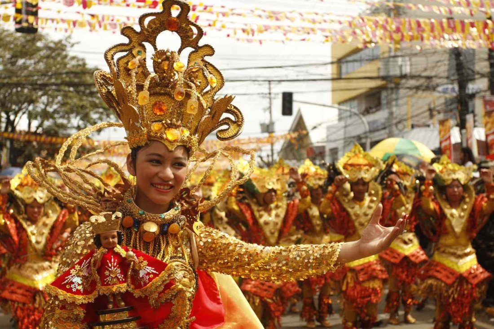
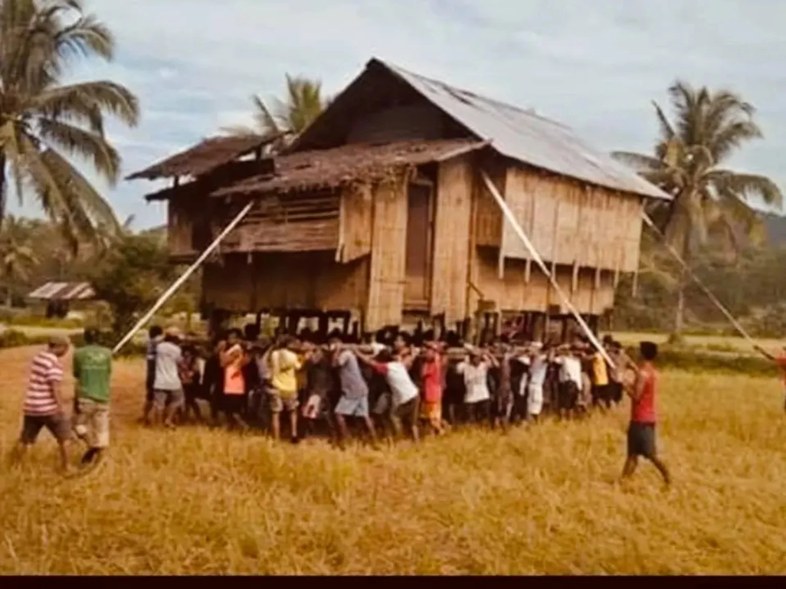
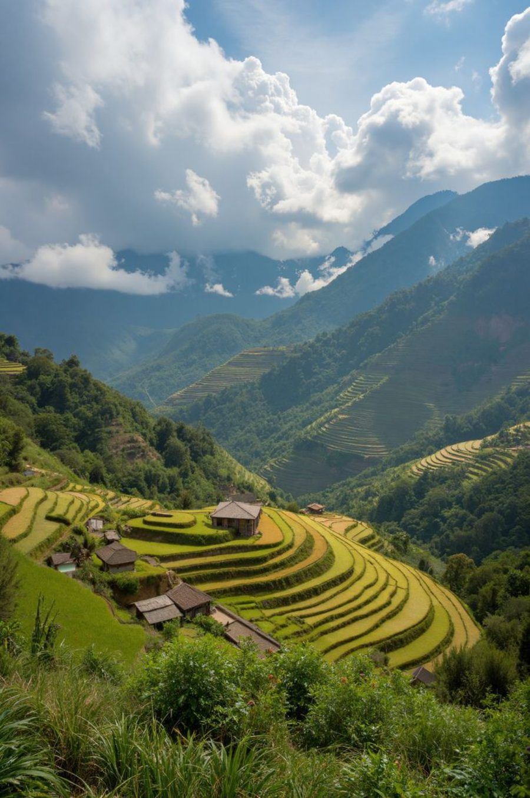

Before Spanish rule
Communities across the islands had their own leaders, languages, customs, and trading connections.
Pearl of the Orient Seas
Get to know the Philippines through its people, history, traditions, places, and food.
Start exploringAbout the country
The Philippines is an archipelagic country in Southeast Asia, located in the western Pacific Ocean.

The Philippines has three main island groups: Luzon, Visayas, and Mindanao. Manila is the capital city.
Filipino and English are the country's official languages. Many other languages are spoken in communities across the islands.
The country is known for its coastlines, mountains, farming communities, and varied local traditions.
The past
Some events that shaped the Philippines.
Communities across the islands had their own leaders, languages, customs, and trading connections.
Ferdinand Magellan reached the islands in 1521. Spanish colonial rule began later in the 16th century.
Emilio Aguinaldo proclaimed Philippine independence from Spain in Kawit, Cavite.
The United States formally recognized the independence of the Republic of the Philippines.
The country is an independent republic with a diverse population and many regional cultures.
Everyday life
Traditions vary by region and community. These are a few familiar examples.

Events such as Sinulog, Ati-Atihan, and Panagbenga bring communities together through local celebrations.
Traditional dances and music are part of many community events. Filipino artists also work in many modern styles.

Family ties, welcoming guests, and bayanihan, or helping one another, are valued in many Filipino communities.
Places to know
These places are known for their scenery or cultural and historical value.

Palawan is known for limestone cliffs, lagoons, coastal scenery, and the Puerto Princesa Underground River.

The rice terraces of Ifugao reflect generations of farming knowledge and are part of a living cultural landscape.

Boracay is known for White Beach, clear coastal water, and activities along the shore.
Food and flavors
Local dishes often use rice, vegetables, meat, seafood, and ingredients with sour or savory flavors.
A dish often made with meat simmered in vinegar, soy sauce, garlic, and seasonings. Recipes differ by household.
A sour soup commonly prepared with tamarind or other souring ingredients, vegetables, and meat or seafood.
A cold dessert made with crushed ice, milk, sweetened ingredients, and assorted toppings.
Quick facts
Press the button to read another fact about the Philippines.
Filipino and English are the official languages. Many regional languages are also spoken throughout the country.